Photographs · 2021 — 2025
Leon Zhou
Selected
Street, travel and everyday scenes, 2022–2025.
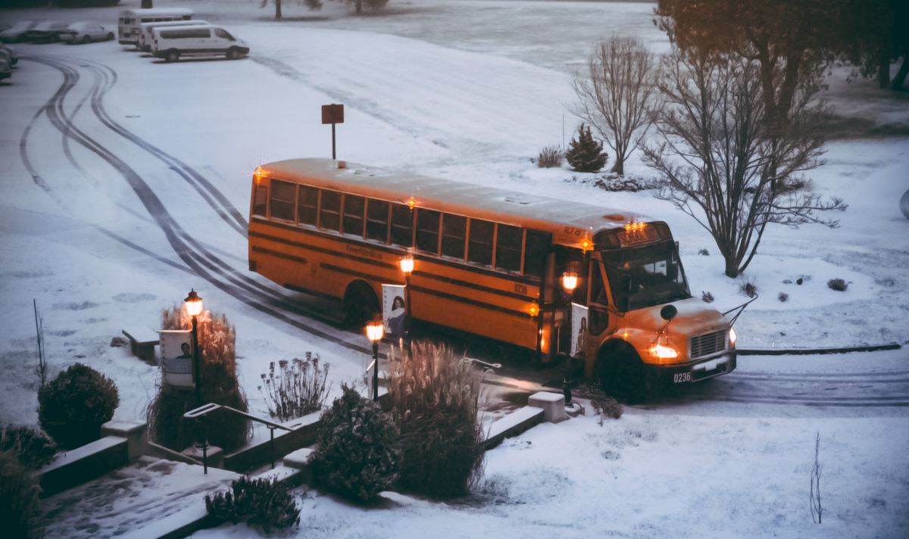
A school bus with its lights on, parked on a snowy driveway at dusk, seen from an upper floor.
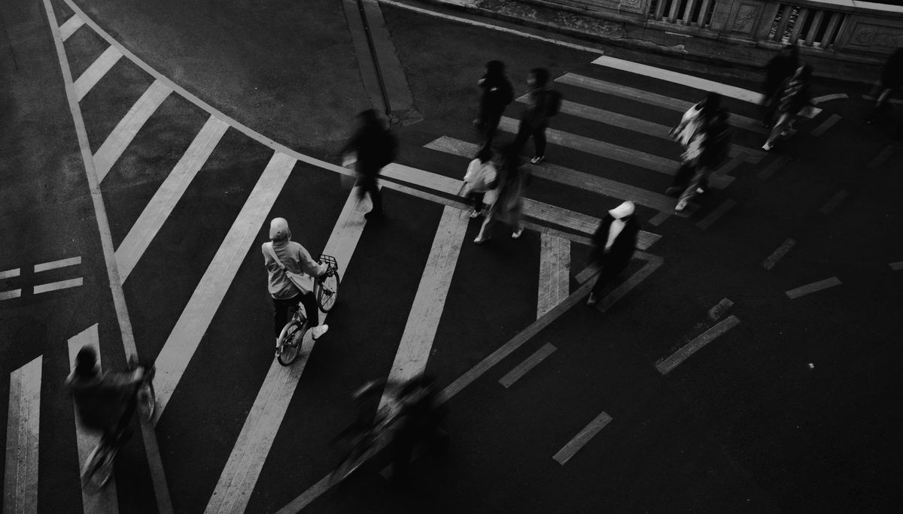
Pedestrians and a cyclist crossing an intersection, shot from above in black and white with a slow shutter to blur their movement.
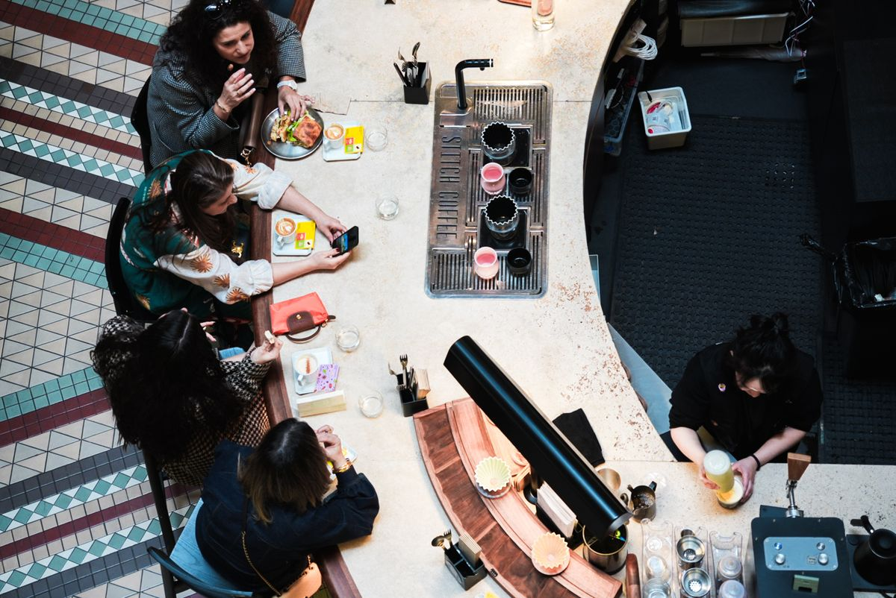
Diners at a café counter seen from directly above, framed by patterned floor tiles.
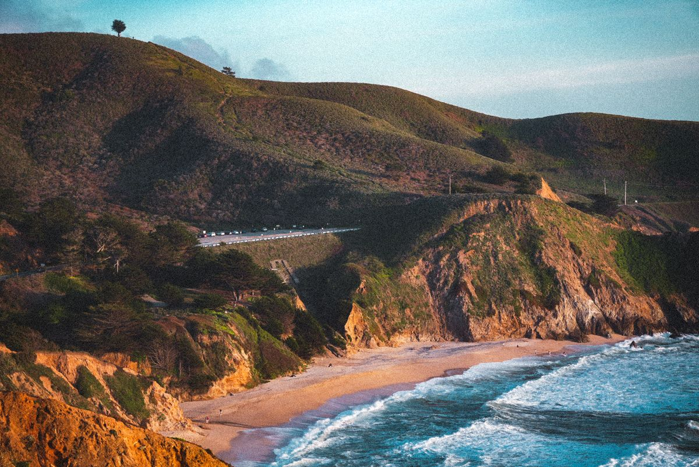
Coastal hills and a small beach in warm, low sunlight, with a road cutting across the slope.
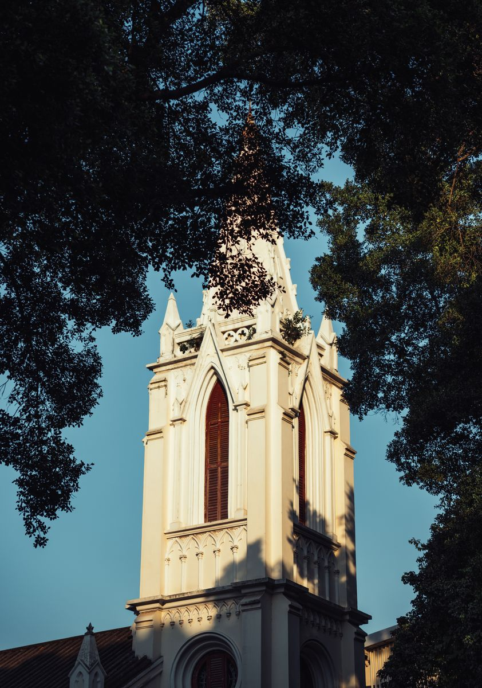
A white church spire framed by dark tree branches against a blue sky.
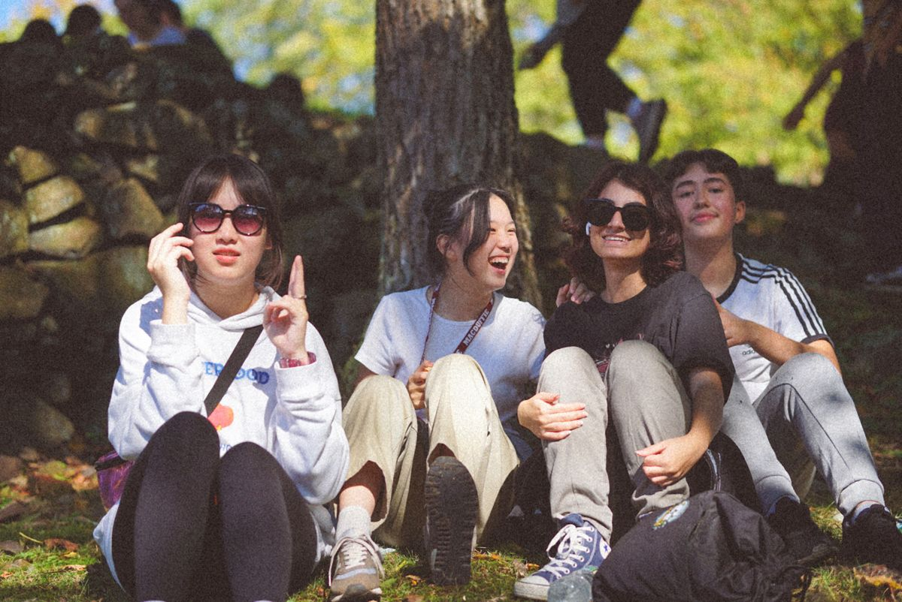
Friends sitting together outdoors in the autumn sun, shot wide open at f/1.4.
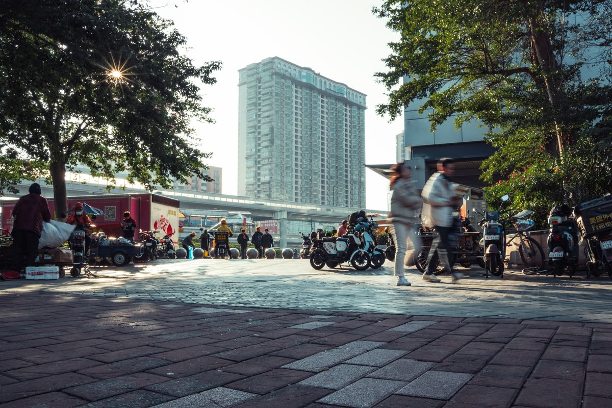
A busy street with pedestrians blurred by a slow shutter and the sun turned into a starburst at f/22.
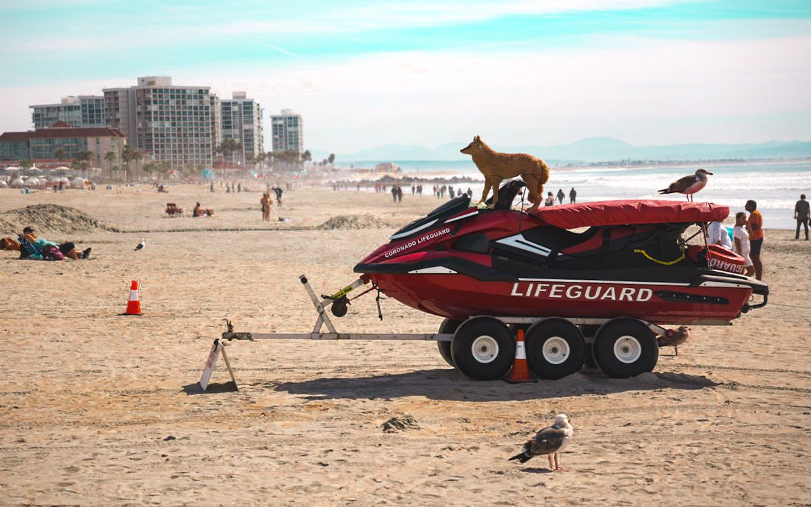
A dog perched on top of a lifeguard jet ski on the beach, with seagulls nearby.
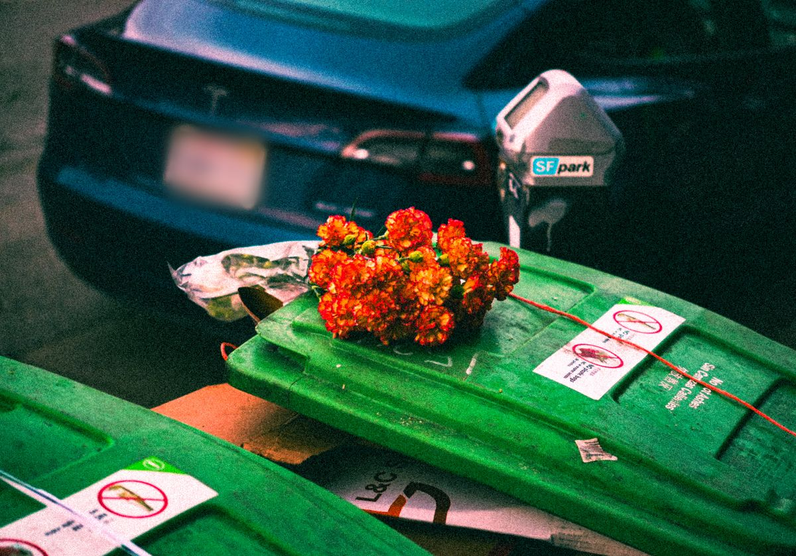
A bunch of red flowers left on top of green trash bins beside a parked car.
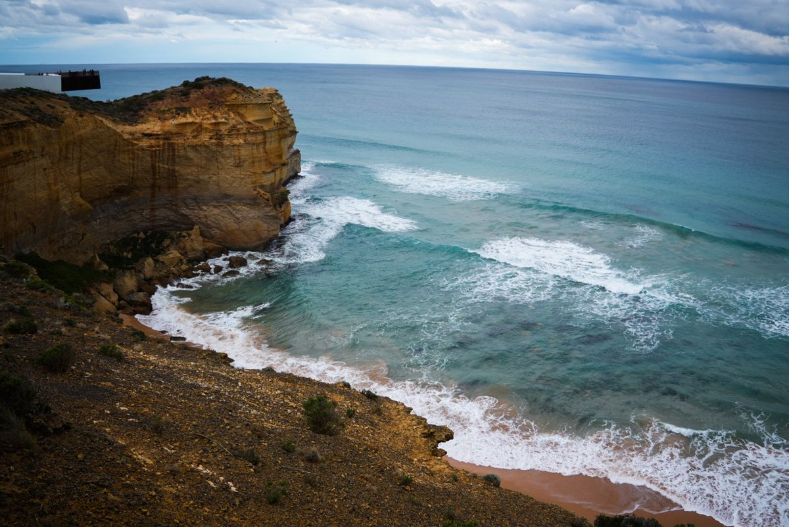
Waves breaking below rugged coastal cliffs under a partly cloudy sky.
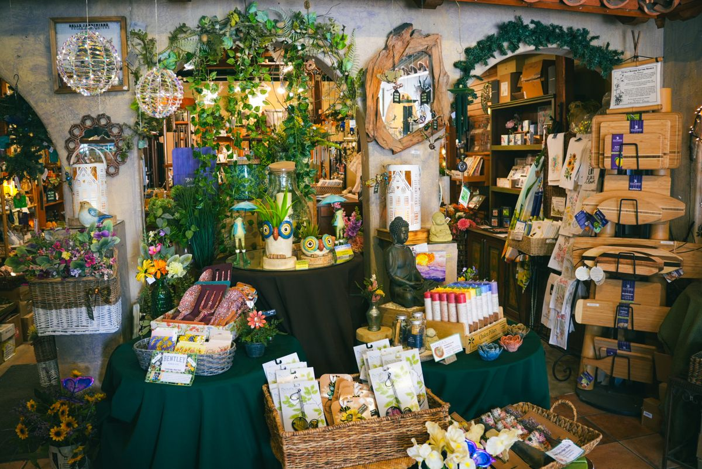
The crowded interior of a gift shop, packed with plants, ornaments and small gifts.
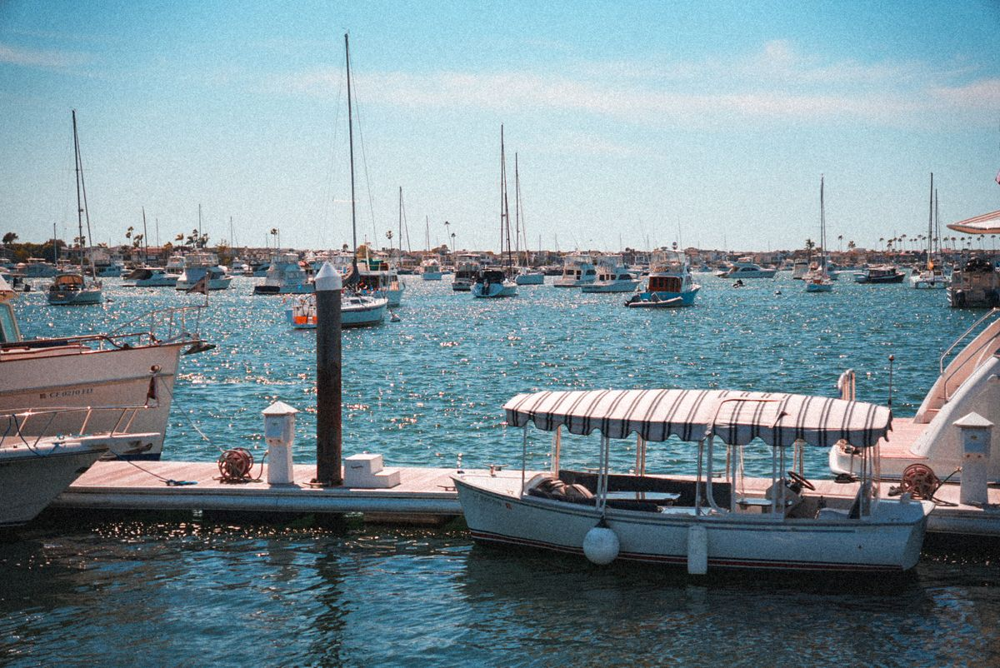
Sailboats and small boats moored in a sunlit harbor.
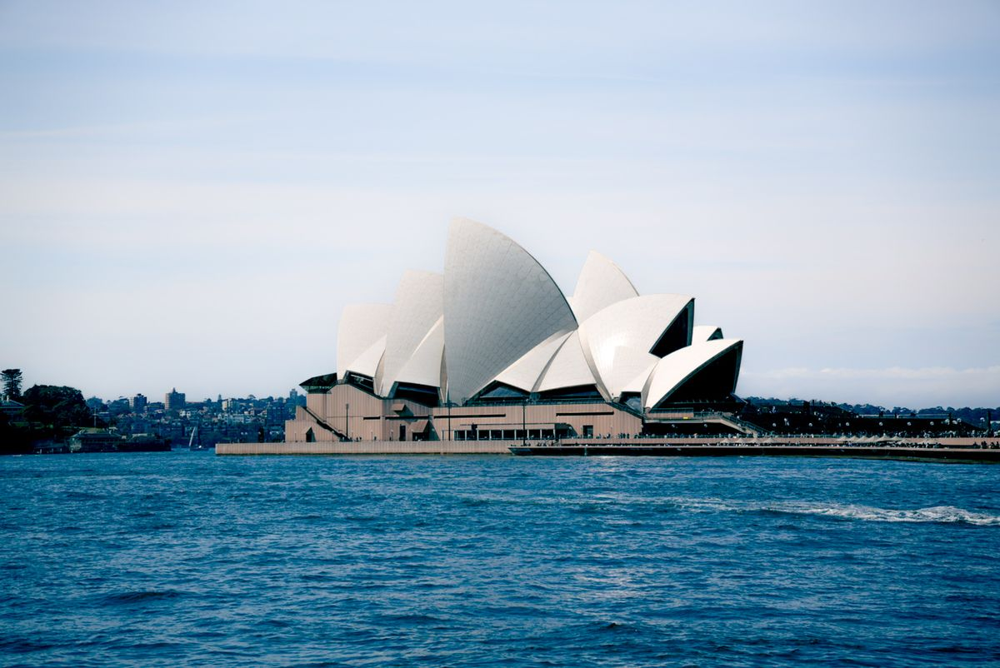
The Sydney Opera House seen from across the water.
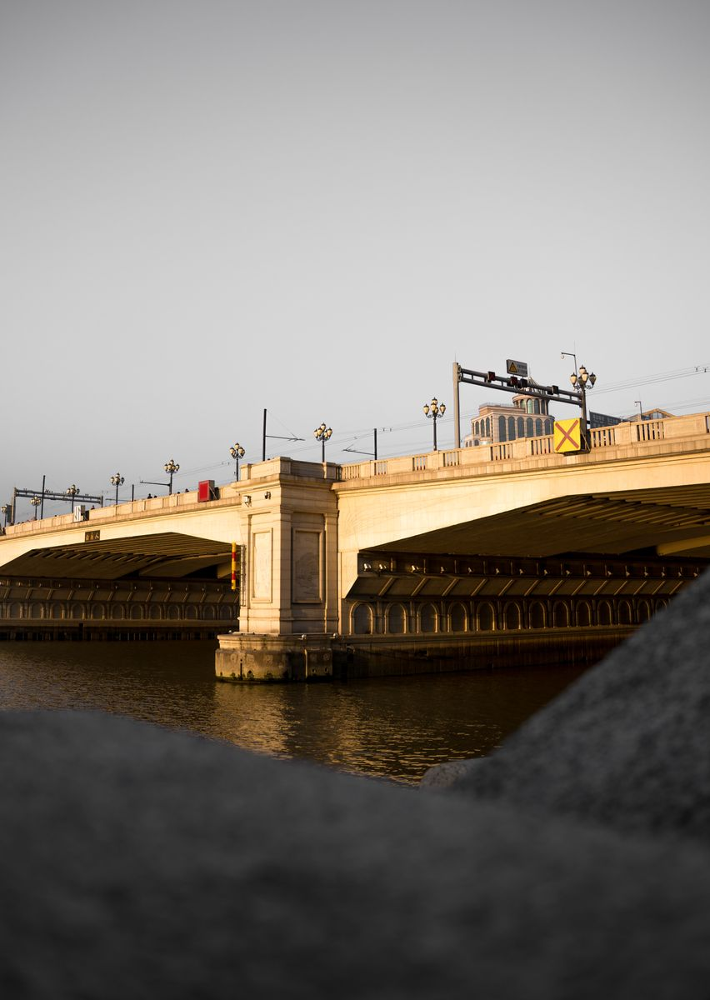
An arched stone bridge over a river in warm evening light, framed by a dark foreground.
Events
Coverage of school events: stage performances, sports meets, basketball games and festivals, 2021–2024.
Spring Gala & Stage


Sports Meet & Basketball


Mid-Autumn & Campus Life


About
I’m Leon (Lihong) Zhou, a student at UC Irvine studying Applied & Computational Mathematics and Business Information Management.
I started shooting in high school at Zhongshan No. 1 Middle School, covering sports meets and basketball games, and made a 15-minute film for the school’s anniversary on my own, from planning and script to shooting, editing and music. The school adopted it as its official anniversary film.
In 2022 I founded the photography club at The MacDuffie School in Massachusetts: monthly photo walks, a student exhibition every semester, and photos of school events like the Spring Gala and the Mid-Autumn celebration.
- Camera
- Sony a6700 · Sigma 18–50mm F2.8 · Sigma 56mm F1.4
- Software
- Premiere Pro · After Effects · Lightroom
- Based in
- Irvine, California
- Resume
- View online · PDF
- Contact
- zhoulihong1001@gmail.com